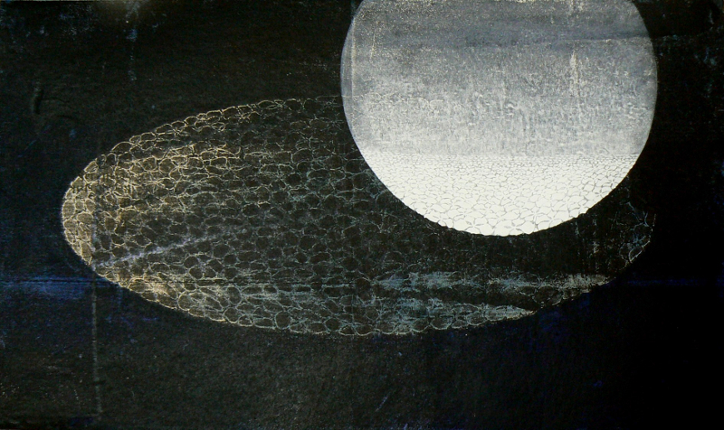

November 23, 2011
'Appearance, disappearance and reappearance'
Artist Aqeel Solangi believes inspiration serves as the basis, but he is more interested in the process of creating art
© Aqeel Solangi
A conscious act that keeps the soul alive and provides a thought for new visions is art to Aqeel Solangi. For him, art is expression and experience -- whether it is dance, literature, painting or singing. "Art is the mirror of a society and it is not removed from life. It is essential because without art, life is dull, colourless, thoughtless, visionless and senseless," said Solangi in an interview with me.
His definition of an "artist" is a person who creates or gives form to their ideas. Quoting Austrian-born English art historian Sir Ernst Hans Josef Gombrich and Spanish-born American painter Esteban Vicente Pérez from 'The Story of Art' and 'School Arts, Vol 60, No 2', respectively, Solangi said, "There really is no such thing as art. There are only artists. The terms 'art' and 'artist' are confusing. One can learn to be a painter, but to be an artist is predestined."
Solangi interprets situations his way and creates visuals that result in a conscious effort. "I think it's fascinating to be able to create something out of nothing, out of blank surfaces or canvases. It's amazing to produce works that you enjoy and that people delight in and appreciate," he said.
After studying art and travelling abroad, he feels that to be an artist is a great thing. For him, it is a heroic task. He is trained as a cinema board painter. He joined Mehboob Painters in Khairpur Mir's as an apprentice around 1996-97 at the age of 15-16. He received his Bachelor of Fine Arts with Honours in 2003 and Master of Arts with Honours in Visual Arts in 2005 from Lahore's National College of Arts (NCA).
Becoming an artist was not an impulsive decision for him, though. "A series of activities led me from doodling with charcoal on the walls of my village in my childhood to my apprenticeship with Ustad Mehboob for sign and cinema board painting for four years to joining senior artist Mussarat Mirza's studio in Sukkur to enrolling at the NCA for pursuing further studies," he said.
When Ustad Mehboob thought that Solangi should be promoted from sign board writing to tasveer (human figures and other objects) making, he taught him to paint sadabahar (the periwinkle flower) as a starting point. "I still have that watercolour work. Even today, when I paint sadabahar in any of my works, that first lesson and first painting reminds me of the joy I had felt that day," he said.
Among different sources of inspiration for him, nature, daily life, literature, poetry, indigenous arts, traditional rituals, and Eastern classical and folk music are predominant. Depending on the nature and size of the work, he uses oils, acrylics, egg tempera, gum tempera and mixed media on canvas, board, gesso panels and a variety of papers, incorporating different techniques like printmaking, carving, scratching and embossing. The recurring symbols in his artwork are kashkol (beggar's bowl), wave, cactus, apples, clouds, seeds, pipes, empty shells, empty vessels, and peeling paint from decaying walls.
When asked what role travelling plays in producing art, he said, "It's not necessary for one to travel around the globe. Travelling within one's own self is more important. A journey within leads to self-discovery." Quoting author/art critic Dr Akbar Naqvi, he said, "Hijrat (journey) is very important to develop any work of art, whether it's physical or intellectual." Solangi added, "Many artists I know transform their working environment to develop their work. They travel to different places, read literature and listen to different kinds of music. All of that works."
Talking about his process of creating an artwork, Solangi said he normally produces a series of drawings or preliminary sketches to get familiar with the subject before executing the final work. "I don't become rigid while working from sketches because the final product could be entirely different from the sketch or planned work. I allow changes. Appearance, disappearance and reappearance of images on the surface is my actual process of creating art," he said.
While he believes inspiration serves as the basis, he is more interested in the process of creating art. For him, the most enjoyable thing about producing art is to witness your thoughts turn into something real in front of your eyes. "Creating art has no destination because it's a constant journey towards the unknown," he said. It is like an addiction to him. He devotes restless nights and valuable moments of his life to it. "Sometimes, work becomes more important than everything else," he added.
Solangi produces art for himself. "If my work is created for someone else, then it's nothing more than labour," he said. When asked if his or others' artworks help him to learn something about himself, he said, "Looking at, experiencing, creating and collecting art is learning. Images, whether mine or others', contain messages, codes and symbols that always lead me in some direction."
Talking about the best comment he received from someone on his work, he said, "Art critic Aasim Akhtar wrote in the comment book of my show titled 'The Root, The Ground & The Air' held at the KOEL gallery in 2010, 'Having been a witness to your development as an artist par excellence, what more can I say than that you've come a long way. Congratulations!'"
When asked about people's understanding of artworks, Solangi said, "I think images, unlike words, don't need to be deciphered. While words need to be translated to be understood by a different community or region, one can understand and appreciate images without being familiar with the artist, community, region or time."
He said art is like meditation. It gives him personal satisfaction and that means more than anything else to him. He said, "My father always had faith in me, without worrying what the future held for me. When I graduated from the NCA, his first response was, 'Beta, ab tou tum bohat baRi dukaan kholo gay na? (Son, now you would open a very big shop, won't you?)' He thought I would continue with sign and cinema board painting. Moreover, Mussarat Mirza's support and encouragement kept my passion alive and resulted in the successful completion of my studies at the NCA."
He teaches painting at NCA's Rawalpindi campus. In the evening, he conducts drawing and painting classes at his studio at Harley Street, Rawalpindi. After that, he works on his own art pieces. He is not the only artist in the family, though. His sister Fauzia is currently studying at Jamshoro's Centre of Excellence in Art & Design, whereas his mother used to sew rallis (quilts) and his sisters take after her in that regard.
Constructive criticism has always played a strong role in Solangi's work. He said, "Criticism provides a sense of direction, especially in contemporary art, which is why I find it very important. It doesn't matter what sort of criticism you are receiving. What really matters is where it leads you. Criticism is a critic's point of view. Agreeing and disagreeing is a different matter. I respect critics' opinions of my work and take them positively."
He believes politics and current affairs affect artists' sensibilities. He said, "Some artists address political issues in their art practice, but I take inspiration from every source connected with life. My work titled 'Expected Darkness 09-09-08' was based on the day Asif Ali Zardari took oath as the President of Pakistan -- September, 9 2008 -- and most of the nation was expecting darkness. 'Visible Emptiness' (2009) was based on the circumstances Pakistan was facing during the time when the government was begging for help from the Friends of Democratic Pakistan. The artwork was the result of the visible emptiness in the finances of the country. I also produced 'Kashkol I' and 'Kashkol II' during that time."
Among his artworks, his favourite are 'Visible Emptiness' (2009), 'Kashkol' (2009) and 'Departure' (2011). His favourite artworks by other artists include Henri Julien Félix Rousseau's 'The Sleeping Gypsy', Euan Ernest Richard Uglow's 'Pyramid', Eugène Henri Paul Gauguin's 'Nevermore' and Édouard Manet's 'Olympia'. His favourite deceased artists comprise Zahoorul Akhlaq, Giorgio de Chirico and Mark Rothko, whereas among the living, he admires David Hockney, Anish Kapoor, Richard Long, Thomas Newbolt, Jamil Naqsh, Mussarat Mirza, Naiza H Khan and RM Naeem. When asked who he would choose if he could receive training from a deceased artist, he said, "I think the Renaissance is the time I would prefer and I wish I could receive training from Leonardo da Vinci."
While Solangi believes the government should fund art schools, he said, "We should not rely on the government entirely. Art schools can formulate policies and put together programmes for funding themselves." When asked if art could be taught to anyone, he said, "There are different opinions on this. According to the traditional system -- the apprenticeship or ustadi-shagirdi system -- skills can be taught and polished by the ustad. On the other hand, according to the academic system, self-expression counts. And there is also a category of self-taught artists. So, there's no question of right or wrong here. This is an example of what can be called as 'diversity of art'."
Talking about the importance of the profession of art, he said, "Every society is known for its creative people. Art brings the spirit to life. It's very difficult to define the purpose of art due to varied approaches in the creation of art and the artists' portrayal of political, social, spiritual and personal themes in their works. Art does not belong to a single purpose." He believes it is not difficult to be an artist in the present era. He said, "We are surrounded by images. We see them everywhere -- especially in the media. Art is no more only for religious discourses or dictation, or for kings or the elite. Now artists create images for themselves and use art for self-expression."
When asked if everyone could understand or appreciate art, he said, "It depends on the works presented as 'art'. While much of contemporary art is direct and easier to understand, some indirect or abstract works need artists to elucidate them." Solangi believes art should have nothing to do with making money. He said, "Art is the continuation of human beings' most primeval activity. The rock carvings and other ancient drawings were created for ordinary people. This activity has been a part of life for centuries and will continue to be so."
First published in Pakistan Today